Тренировочная работа по ИНФОРМАТИКЕ
Вариант 1
9 класс
Выполнена: ФИО_________________________________ класс ______
Инструкция по выполнению работы
Работа по информатике состоит из двух частей, включающих в себя 15 заданий. Часть 1 содержит 10 заданий с кратким ответом; часть 2 содержит 5 заданий, которые необходимо выполнить на компьютере.
На выполнение работы отводится 2 часа 30 минут (150 минут).
Вы можете самостоятельно определять время, которое отводите на
выполнение заданий, но рекомендуемое время на выполнение заданий
части 1 – 30 минут, на выполнение заданий части 2 – 2 часа (120 минут).
Ответы к заданиям 1–12 записываются в виде числа, слова, последовательности символов или цифр. Ответ запишите в поле ответа в тексте работы.
Результатом выполнения каждого из заданий 13–15 является отдельный файл. Формат файла, его имя и каталог для сохранения Вам сообщат организаторы.
При выполнении заданий можно пользоваться черновиком. Записи в черновике не учитываются при оценивании работы.
Баллы, полученные Вами за выполненные задания, суммируются.
Постарайтесь выполнить как можно больше заданий и набрать наибольшее количество баллов.
Желаем успеха!
Часть 1
Ответами к заданиям 1–10 являются число, слово, последовательность букв или цифр.
№ 1
Статья, набранная на компьютере, содержит 4 страницы, на каждой странице 12 строк, в каждой строке 56 символов. Определите информационный объём статьи в Кбайтах в кодировке Windows-180, в которой каждый символ кодируется 72 бит.
Ответ: ____23,625__________.
№ 2
Валя шифрует русские слова, записывая вместо каждой буквы её код.
|
А |
В |
Д |
О |
Р |
У |
|
01 |
011 |
100 |
111 |
010 |
001 |
Некоторые цепочки можно расшифровать не одним способом. Например, 00101001 может означать не только УРА, но и УАУ.
Даны три кодовые цепочки:
01001001001
10011001100
01111110001
Найдите среди них ту, которая имеет только одну расшифровку, и запишите в ответе расшифрованное слово.
Ответ: _______ВОДА___________.
№ 3
Найдите трехзначные числа x, y, для которых истинно высказывание:
НЕ((x+y) делится на 3) И (НЕ(x делится на 3) ИЛИ НЕ(y делится на 3)) И ((x+y) максимально). В качестве ответа запишите их сумму.
Ответ: _____998 + 997 = 1995_____.
№ 4
Между населёнными пунктами A, B, C, D, E построены дороги, протяжённость которых приведена в таблице.
Определите длину кратчайшего пути между пунктами A и D, проходящего через пункт С. Передвигаться можно только по дорогам, указанным в таблице.
|
|
A |
B |
C |
D |
E |
|
A |
|
1 |
4 |
1 |
|
|
B |
1 |
|
2 |
|
1 |
|
C |
4 |
2 |
|
4 |
1 |
|
D |
1 |
|
4 |
|
2 |
|
E |
|
1 |
1 |
2 |
|
Ответ: ______6 : ABCED_________.
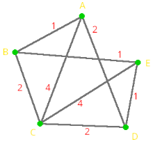
№ 5
исполнителя Программист две команды, которым присвоены номера:
2. возведи в квадрат
Составьте алгоритм получения из числа 2 числа 64, содержащий не более 5 команд. В ответе запишите только номера команд.
(Например, 212 – это алгоритм:
Возведи в квадрат,
Раздели на 2,
Возведи в квадрат,
который преобразует число 2 в число 4.)
Если таких алгоритмов более одного, то запишите любой из них.
Ответ: ______2212______.
№ 6
Ниже приведена программа.
|
С++ |
|
#include <iostream> using namespace std; int main() { int s, k, A; cin >> s >> k >> A; if ((s > A) && (k > 5)) cout << "ДА"; else cout << "НЕТ"; return 0; } |
Было проведено 9 запусков программы, при которых в качестве значений переменных s и k вводились следующие пары чисел:
(16, 12); (–8, –10); (18, 2); (5, –5); (–3, –9); (–10, 7); (–10, –2); (14, 1); (20, 5). Укажите минимальное целое значение параметра А, при котором для указанных входных данных программа напечатает «НЕТ» 4 раза.
Ответ: ___нет решения___.
(–10,
–2)
(–10, 7)
(–8,
–10)
(–3,
–9)
(5,
–5)
(14,
1)
(16, 12)
(18,
2)
(20,
5)
A = нет решения
№ 7
Доступ к файлу probnik.txt, находящемуся на сервере oge.org, осуществляется по протоколу ftp. Фрагменты адреса файла закодированы цифрами от 1 до 7. Запишите последовательность этих цифр, кодирующую адрес указанного файла в сети Интернет.
ftp
oge
/
.txt
probnik
.org
://
Ответ: ___1726354____.
№ 8
В языке запросов поискового сервера для обозначения логической операции «ИЛИ» используется символ «|», а для логической операции «И» – символ «&».
В таблице приведены запросы и количество найденных по ним страниц некоторого сегмента сети. Считается, что все запросы выполнялись практически одновременно, так что набор страниц, содержащих все искомые слова, не изменялся за время выполнения запросов.
|
Запрос |
Найдено страниц (в тысячах) |
|
Рыжий |
100 |
|
Честный |
40 |
|
Влюблённый |
20 |
|
Рыжий & Честный |
40 |
|
Рыжий & Влюблённый |
20 |
|
Рыжий & Честный & Влюблённый |
10 |
Какое количество страниц (в тысячах) будет найдено по запросу Влюблённый | Честный?
Ответ: _____50______.
№ 9
На рисунке – схема дорог, связывающих города. По каждой дороге можно двигаться только в одном направлении, указанном стрелкой. Сколько существует различных путей из города S в город T?
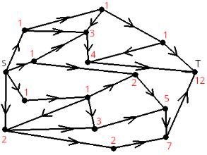
Ответ: _____12_______.
№ 10
Выберите среди чисел 16E16, 7018, 3124 то, в двоичной записи которого наименьшее число нулей. Запишите в качестве ответа это число в десятичной системе счисления.
Ответ: _____54______.
16Е16 = 101101110
7018 = 111000001
3124 = 110110
Сначала в десятичную, потом в двоичную, сразу нельзя, 104 / 2 = 24
Часть 2. Вариант 1
Задания этой части (11–15) выполняются на компьютере. Ответом к заданиям 11, 12 является слово или число. Результатом выполнения заданий 13–15 является отдельный файл (для одного задания – один файл). Формат файла, его имя и каталог для сохранения Вам сообщат организаторы.
№ 11
В одном из произведений Бунина, встречается фраза «…поющая над старой звонкой лютней…». С помощью поисковых средств операционной системы и текстового редактора выясните того, о ком идет речь. В качестве ответа запишите только 1 слово.
Ответ: __ девочка __.
«Ты, девочка! ты, с ангельским лицом,
Поющая над старой звонкой лютней!»
№ 12
Сколько файлов размером строго меньше 41 Кб и с расширением .rtf содержится в подкаталогах каталога Поэзия? В ответе укажите только число.
Ответ: ____14_____.
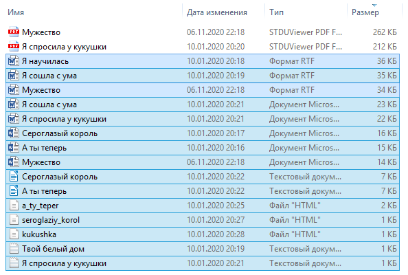
3 файла
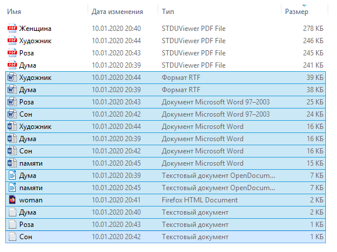
2 файла
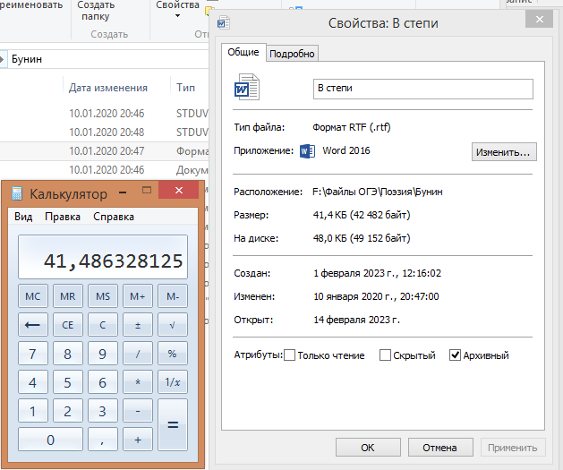
Файл не меньше 41 Кб
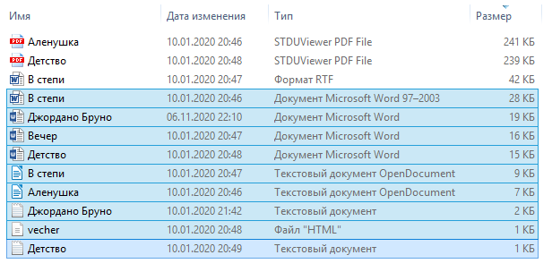
0 файлов
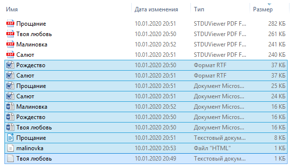
2 файла
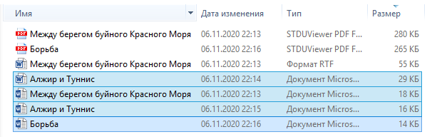
0 файлов
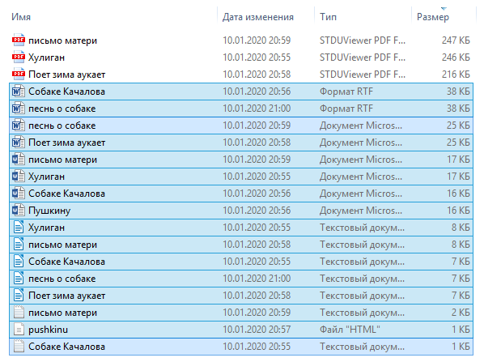
2 файла
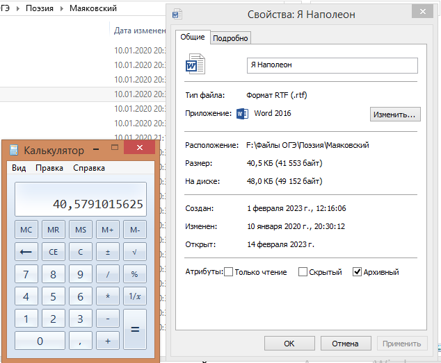
Файл меньше 41 Кб
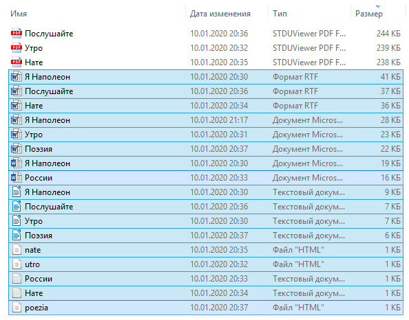
3 файла
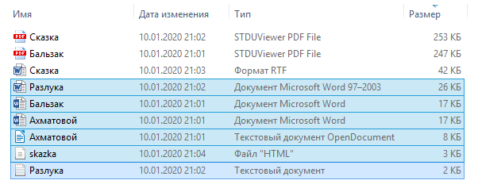
0 файлов
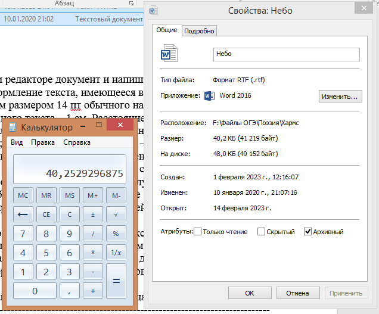
Файл меньше 41 Кб
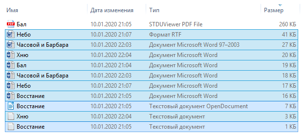
1 файл
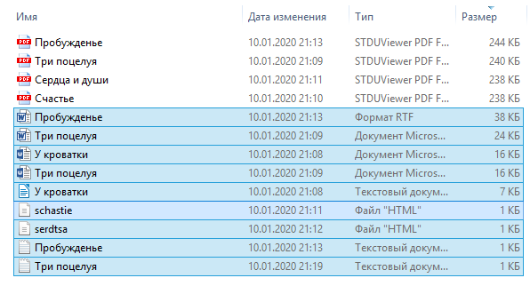
1 файл
№ 13.2
Создайте в текстовом редакторе документ и напишите в нём следующий текст, точно воспроизведя всё оформление текста, имеющееся в образце. Данный текст должен быть набран шрифтом размером 14 пт обычного начертания. Отступ первой строки первого абзаца основного текста – 1 см. Расстояние между строками текста не менее одинарного, но не более полуторного междустрочного интервала. Основной текст выровнен по ширине; заголовки текста и таблицы – по центру; в ячейках заголовков столбцов таблицы применено выравнивание по центру, в ячейках первого
столбца – по левому краю, в ячейках остальных столбцов – по правому. В основном тексте и таблице есть слова, выделенные полужирным, курсивным шрифтом и подчёркиванием. Таблица выровнена на странице по центру по горизонтали. Ширина таблицы меньше ширины основного текста. Ячейки таблицы выровнены по центру вертикали.
При этом допустимо, чтобы ширина Вашего текста отличалась от ширины текста в примере, поскольку ширина текста зависит от размеров страницы
полей. В этом случае разбиение текста на строки должно соответствовать стандартной ширине абзаца. Интервал между текстом и заголовком таблицы не менее 6 и не более 24 пт.
Текст сохраните в файле, имя которого Вам сообщат организаторы.
----------------------------------------------------------------------------------------------------
DOS-системы
Операционная система – совокупность программ, отвечающих за связь низкоуровневых обращений к аппаратной платформе ПК с высокоуровневыми средствами абстракции. DOS (от англ. disk operating system) – семейство дисковых операционных систем. Первые версии MS-DOS корпорации Microsoft были базированы на пакете 86-DOS (или QDOS, от англ. Quick and Dirty Operating System), который являлся клоном операционной системы CP/M.
Сравнение DOS-систем
|
Name |
Hard drive: partition size max |
Integrated disk compression utility |
Native support:long file names |
|
86-DOS 0.42-1.00 |
— |
|
|
|
(CP/M 2 through RDCPM) |
— |
|
|
|
MS-DOS 1.25 |
— |
No |
No |
|
MS-DOS 2.0-2.11 |
16 MB (32 MB with third-party FORMAT) |
No |
No |
|
MS-DOS 3.0 |
32 MB |
No |
No |
№ 14
В электронную таблицу занесли данные наблюдений за погодой в течение одного года.
В столбце A записана дата наблюдения, в столбце B – среднесуточная температура воздуха для указанной даты, в столбце C – количество выпавших осадков (в миллиметрах) для указанной даты, в столбце D – среднесуточное атмосферное давление (в миллиметрах ртутного столба). В столбце E записано направление ветра для указанной даты – одно из восьми возможных значений: «СЗ», «С», «СВ», «В», «ЮВ», «Ю», «ЮЗ», «З». В столбце F записана среднесуточная скорость ветра (в метрах в секунду).
Всего в электронную таблицу были занесены данные по всем 365 дням года в хронологическом порядке.
Выполните задание.
Откройте файл с данной электронной таблицей (расположение файла Вам сообщат организаторы). На основании данных, содержащихся в этой таблице, выполните задания.
Какое наименьшее количество осадков выпадало за сутки в осенние месяцы
(сентябрь, октябрь, ноябрь)? Ответ на этот вопрос запишите
в ячейку H2 таблицы.
Какая максимальня температура была в те дни года, когда дул северный (С) ветер? Ответ на этот вопрос запишите в ячейку H3 таблицы.
Постройте круговую диаграмму, отображающую соотношение количества дней, когда дули ветры «З», «СВ» и «ЮВ». Левый верхний угол диаграммы разместите вблизи ячейки G6.
Ответы должны быть вычислены с точностью не менее двух знаков после запятой. Полученную таблицу необходимо сохранить под именем, указанным организаторами.
№ 15.2
Напишите программу, которая в последовательности натуральных чисел определяет количество трехзначных чисел, не кратных 6 и оканчивающихся на 7. Программа получает на вход количество чисел в последовательности, а затем сами числа.
Количество чисел не превышает 100 000. Введённые числа по модулю
не превышают 1000 000 000.
Тренировочная работа по ИНФОРМАТИКЕ
9 класс
Вариант 2
Выполнена: ФИО_________________________________ класс ______
Инструкция по выполнению работы
Работа по информатике состоит из двух частей, включающих в себя 15 заданий. Часть 1 содержит 10 заданий с кратким ответом; часть 2 содержит 5 заданий, которые необходимо выполнить на компьютере.
На выполнение работы отводится 2 часа 30 минут (150 минут).
Вы можете самостоятельно определять время, которое отводите на
выполнение заданий, но рекомендуемое время на выполнение заданий
части 1 – 30 минут, на выполнение заданий части 2 – 2 часа (120 минут).
Ответы к заданиям 1–12 записываются в виде числа, слова, последовательности символов или цифр. Ответ запишите в поле ответа в тексте работы.
Результатом выполнения каждого из заданий 13–15 является отдельный файл. Формат файла, его имя и каталог для сохранения Вам сообщат организаторы.
При выполнении заданий можно пользоваться черновиком. Записи в черновике не учитываются при оценивании работы.
Баллы, полученные Вами за выполненные задания, суммируются.
Постарайтесь выполнить как можно больше заданий и набрать наибольшее количество баллов.
Желаем успеха!
Часть 1
Ответами к заданиям 1–10 являются число, слово, последовательность букв или цифр.
№ 1
Статья, набранная на компьютере, содержит 12 страниц, на каждой странице 12 строк, в каждой строке 102 символа. Определите информационный объём статьи в Кбайтах в кодировке Windows-121, в которой каждый символ кодируется 32 бит.
Ответ: ________57,375_________.
№ 2
Валя шифрует русские слова, записывая вместо каждой буквы её код.
|
А |
В |
Д |
О |
Р |
У |
|
|
|
|
|
|
|
|
01 |
011 |
100 |
111 |
010 |
001 |
|
|
|
|
|
|
|
Некоторые цепочки можно расшифровать не одним способом. Например, 00101001 может означать не только УРА, но и УАУ.
Даны три кодовые цепочки:
00101001010
01111101101
01010101010
Найдите среди них ту, которая имеет только одну расшифровку, и запишите в ответе расшифрованное слово.
Ответ: ________ВОВА________.
№ 3
Найдите трехзначные числа x, y, для которых истинно высказывание:
((x+y) делится на 3) И ((x делится на 2) И НЕ(y делится на 3)) И ((x+y) минимально). В качестве ответа запишите их сумму.
Ответ: _______100+101=201______.
№ 4
Определите длину кратчайшего пути между пунктами A и E, проходящего через пункт D. Передвигаться можно только по дорогам, указанным в таблице.
|
|
A |
B |
C |
D |
E |
|
A |
|
1 |
4 |
2 |
|
|
B |
1 |
|
2 |
|
1 |
|
C |
4 |
2 |
|
2 |
4 |
|
D |
2 |
|
2 |
|
1 |
|
E |
|
1 |
4 |
1 |
|
Ответ: ____3: ADE___________.
№ 5
исполнителя Программист две команды, которым присвоены номера:
1. вычти 1
2. умножь на 2
Первая из них уменьшает число на экране на 1, вторая увеличивает число в 2 раза.
Составьте алгоритм получения из числа 1 числа 6, содержащий не более 5 команд. В ответе запишите только номера команд.
(Например, 21 – это алгоритм:
умножь на 2
вычти 1
который преобразует число 1 в число 1.)
Если таких алгоритмов более одного, то запишите любой из них.
Ответ: _______2212_______.
№ 6
Ниже приведена программа.
|
С++ |
|
#include <iostream> using namespace std; int main() { int s, k, A; cin >> s >> k >> A; if ((s > A) && (k < 5)) cout << "ДА"; else cout << "НЕТ"; return 0; } |
Было проведено 9 запусков программы, при которых в качестве значений переменных s и k вводились следующие пары чисел:
(16, 12); (–8, –10); (18, 2); (5, –5); (–3, –9); (–10, 7); (–10, –2); (14, 1); (20, 5). Укажите максимальное целое значение параметра А, при котором для указанных входных данных программа напечатает «НЕТ» 6 раз.
(–10, –2)
(–10,
7) НЕТ
(–8, –10)
(–3, –9)
(5, –5) НЕТ
(14, 1) НЕТ
(16,
12) НЕТ
(18, 2) НЕТ
(20,
5) НЕТ
A = 4
Ответ: ___4________.
№ 7
Доступ к файлу frogs.png, находящемуся на сервере ilike.frogs, осуществляется по протоколу https. Фрагменты адреса файла закодированы цифрами от 1 до 7. Запишите последовательность этих цифр, кодирующую адрес указанного файла в сети Интернет.
.png
/
ilike
.frogs
frogs
https
://
Ответ: _______6734251_______.
№ 8
языке запросов поискового сервера для обозначения логической операции «ИЛИ» используется символ «|», а для логической операции «И» – символ «&».
таблице приведены запросы и количество найденных по ним страниц некоторого сегмента сети. Считается, что все запросы выполнялись практически одновременно, так что набор страниц, содержащих все искомые слова, не изменялся за время выполнения запросов.
|
Запрос |
Найдено страниц (в тысячах) |
|
Рыжий |
100 |
|
Честный |
90 |
|
Влюблённый |
110 |
|
Рыжий & Честный |
30 |
|
Рыжий & Влюблённый |
0 |
|
Честный & Влюблённый |
40 |
Какое количество страниц (в тысячах) будет найдено по запросу
Рыжий | Влюблённый | Честный?
Ответ: ______100+90+110-30-40= 230 _____.
№ 9
На рисунке – схема дорог, связывающих города. По каждой дороге можно двигаться только в одном направлении, указанном стрелкой. Сколько существует различных путей из города S в город T?
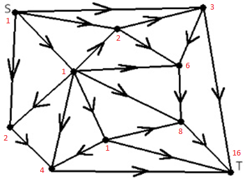
Ответ: ________16_________.
№ 10
Выберите среди чисел AE16, 1508, 1234 то, в двоичной записи которого наибольшее число нулей. Запишите в качестве ответа это число в десятичной системе счисления.
Ответ: ____104______.
AE16 = 10101110
1508 = 1101000
1234 = 11011
Часть 2. Вариант 2
Задания этой части (11–15) выполняются на компьютере. Ответом к заданиям 11, 12 является слово или число. Результатом выполнения заданий 13–15 является отдельный файл (для одного задания – один файл). Формат файла, его имя и каталог для сохранения Вам сообщат организаторы.
№ 11
В одном из произведений А.И. Куприна, текст которого приведён
подкаталоге Куприн, встречается обращение «...не обращайте ни на что внимания. Вы смешной: чуть вас тронешь, вы и завяли. Такая вы стыдливая мимоза...». С помощью поисковых средств операционной системы и текстового редактора выясните имя персонажа, к которому направлено данное обращение. Имя укажите в той форме, в которой оно встречается в тексте произведения.
Ответ: ____ Ромочка_______.
№ 12
Сколько файлов с расширением .pdf размера строго менее 238 Кбайт содержится в подкаталогах каталога Поэзия? В ответе укажите только число.
Ответ: _______5_______.
Проход по файлам см. в разборе №12 варианта 1.
№ 13.2
Создайте в текстовом редакторе документ и напишите в нём следующий текст, точно воспроизведя всё оформление текста, имеющееся в образце. Данный текст должен быть набран шрифтом размером 14 пт обычного начертания. Отступ первой строки первого абзаца основного текста – 1 см. Расстояние между строками текста не менее одинарного, но не более полуторного междустрочного интервала. Основной текст выровнен по ширине; заголовки текста и таблицы – по центру; в ячейках заголовков столбцов таблицы применено выравнивание по центру, в ячейках первого
столбца – по левому краю, в ячейках остальных столбцов – по правому. В основном тексте и таблице есть слова, выделенные полужирным, курсивным шрифтом и подчёркиванием. Таблица выровнена на странице по центру по горизонтали. Ширина таблицы меньше ширины основного текста. Ячейки таблицы выровнены по центру вертикали.
При этом допустимо, чтобы ширина Вашего текста отличалась от ширины текста в примере, поскольку ширина текста зависит от размеров страницы
полей. В этом случае разбиение текста на строки должно соответствовать стандартной ширине абзаца. Интервал между текстом и заголовком таблицы не менее 6 и не более 24 пт.
Текст сохраните в файле, имя которого Вам сообщат организаторы.
----------------------------------------------------------------------------------------
Компиляторы
Компилятор – специальная программа, переводящая исходные тексты программ, написанных на высокоуровневых языках на низкоуровневый язык ассемблера, максимально приближенный к машинному. Каждой команде (в двоичном виде) процессора соответствует некое мнемоническое обозначение на языке ассемблера.
Основные команды, самые простейшие есть:
mov, cmp
add, sub
jmp, je, jl, jg, jle, jge
и многие другие.
Сравнение показателей
|
Compiler |
LU Serial |
LU Parallel |
Threads |
TMV Compile |
|
PGC++ |
11.0 |
103 |
24 |
2750 |
|
Clang |
8.22 |
75.3 |
15 |
902 |
|
AOCC |
9.57 |
96.4 |
15 |
1230 |
|
Zapcc |
8.21 |
74.7 |
15 |
510 |
|
G++ |
14.3 |
90.9 |
12 |
848 |
|
IntelC++ |
14.6 |
118 |
15 |
1420 |
№ 14
В электронную таблицу занесли данные наблюдений за погодой в течение одного года. Ниже приведены первые пять строк таблицы:
В столбце A записана дата наблюдения, в столбце B – среднесуточная температура воздуха для указанной даты, в столбце C – количество выпавших осадков (в миллиметрах) для указанной даты, в столбце D – среднесуточное атмосферное давление (в миллиметрах ртутного столба). В столбце E записано направление ветра для указанной даты – одно из восьми возможных значений: «СЗ», «С», «СВ», «В», «ЮВ», «Ю», «ЮЗ», «З». В столбце F записана среднесуточная скорость ветра (в метрах в секунду).
Всего в электронную таблицу были занесены данные по всем 365 дням года в хронологическом порядке.
Выполните задание.
Откройте файл с данной электронной таблицей (расположение файла Вам сообщат организаторы). На основании данных, содержащихся в этой таблице, выполните задания.
Какой была наибольшая температура воздуха в летние месяцы (июнь, июль, август)? Ответ на этот вопрос запишите в ячейку H2 таблицы.
Какое наибольшее количество осадков выпадало за сутки в те дни года, когда дул северо-восточный (СВ) ветер? Ответ на этот вопрос запишите в ячейку H3 таблицы.
Постройте круговую диаграмму, отображающую соотношение количества дней, когда дули ветры «С», «ЮЗ» и «СЗ». Левый верхний
угол диаграммы разместите вблизи ячейки G6.
Ответы должны быть вычислены с точностью не менее двух знаков после запятой.
Полученную таблицу необходимо сохранить под именем, указанным организаторами.
№ 15.2
Напишите программу, которая в последовательности натуральных чисел определяет количество четырехзначных чисел, кратных 7 и не оканчивающихся на 1. Программа получает на вход количество чисел в последовательности, а затем сами
числа.
Количество чисел не превышает 100 000. Введённые числа по модулю
не превышают 1000 000 000.